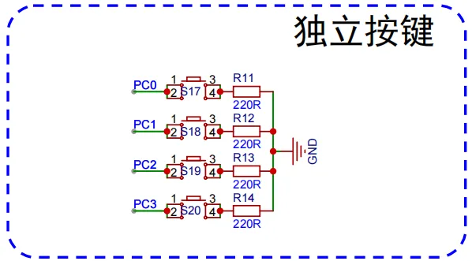
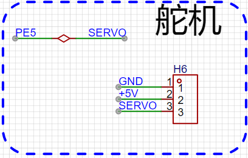

<!DOCTYPE lake>
<h2 data-lake-id="j9dbW" id="j9dbW"><span data-lake-id="u7b2cde4e" id="u7b2cde4e">rt舵机功能开发</span></h2><p data-lake-id="uf5e09828" id="uf5e09828"><br/></p><h3 data-lake-id="DyA6i" id="DyA6i"><span data-lake-id="ue7121de1" id="ue7121de1">接线方式</span></h3><ul list="u5e9f64d9"><li data-lake-id="u91596c0b" fid="u177b2ae8" id="u91596c0b"><span data-lake-id="u0dc45402" id="u0dc45402">5V</span></li><li data-lake-id="u0b7408aa" fid="u177b2ae8" id="u0b7408aa"><span data-lake-id="ucf8a9c9d" id="ucf8a9c9d">GND</span></li><li data-lake-id="u0e0e05cf" fid="u177b2ae8" id="u0e0e05cf"><span data-lake-id="ude99a367" id="ude99a367">PE5 （PWM输出引脚/管脚）</span></li></ul><h3 data-lake-id="e4CyA" id="e4CyA"><span data-lake-id="u76d75a41" id="u76d75a41">设置输出角度</span></h3><p data-lake-id="u486d47c6" id="u486d47c6"><span data-lake-id="u96c4ff2f" id="u96c4ff2f">连接TIMER8 CH0，输出频率50Hz</span></p><p data-lake-id="u786b0e12" id="u786b0e12"><span data-lake-id="u376ad3a9" id="u376ad3a9">占空比设置，舵机输出的角度：</span></p><ul list="u234ce863"><li data-lake-id="ufa0e0b9a" fid="u943dfb34" id="ufa0e0b9a"><strong><span data-lake-id="udd148b99" id="udd148b99">输出角度：[0, 180]</span></strong></li><li data-lake-id="ud4f6dcd4" fid="u943dfb34" id="ud4f6dcd4"><strong><span data-lake-id="u99f30d85" id="u99f30d85">占空比：[500/20000,  2500/20000]</span></strong></li><li data-lake-id="u54ac8432" fid="u943dfb34" id="u54ac8432"><span data-lake-id="ub5841d40" id="ub5841d40">角度按比例修正</span></li></ul><p data-lake-id="uc591c095" id="uc591c095"><span data-lake-id="ue315f0c1" id="ue315f0c1">​</span><br/></p><h2 data-lake-id="utunC" id="utunC"><span data-lake-id="u3c36e028" id="u3c36e028">注意事项</span></h2><blockquote class="lake-alert lake-alert-color4" data-lake-id="uf652233f" id="uf652233f"><ul list="u8c2fc967"><li data-lake-id="u01548b68" fid="ue6e12fc3" id="u01548b68"><span data-lake-id="ud1e727c8" id="ud1e727c8">舵机连接开发板后，不要使劲用手拧，会有反向大电流击穿开发板芯片 </span></li><li data-lake-id="uf4f295d6" fid="ue6e12fc3" id="uf4f295d6"><span data-lake-id="udd20371c" id="udd20371c">舵机装上平衡球机构后，要用代码控制运动范围限制在【60°，165°】范围</span></li><li data-lake-id="u9ad143e4" fid="ue6e12fc3" id="u9ad143e4"><span data-lake-id="u0cb2be93" id="u0cb2be93">超过范围会有堵转风险，烧毁USB接口和芯片  </span></li></ul></blockquote><p data-lake-id="ue8949f90" id="ue8949f90"></p><p data-lake-id="u029c6e9b" id="u029c6e9b"></p><ul list="u487ba6b0"><li data-lake-id="u52755c9f" fid="u7bb3db07" id="u52755c9f"><span data-lake-id="uba15d4b5" id="uba15d4b5">通过按键PC0角度减小</span></li><li data-lake-id="ub65fc918" fid="u7bb3db07" id="ub65fc918"><span data-lake-id="uaba8b7dd" id="uaba8b7dd">通过按键PC1角度增加</span></li></ul><p data-lake-id="u9c67d7e1" id="u9c67d7e1"><br/></p><h3 data-lake-id="oz3PU" id="oz3PU"><span data-lake-id="u3c62c265" id="u3c62c265">舵机驱动参考</span></h3><span class="yuque-card-unsupported">[codeblock]</span><span class="yuque-card-unsupported">[codeblock]</span>